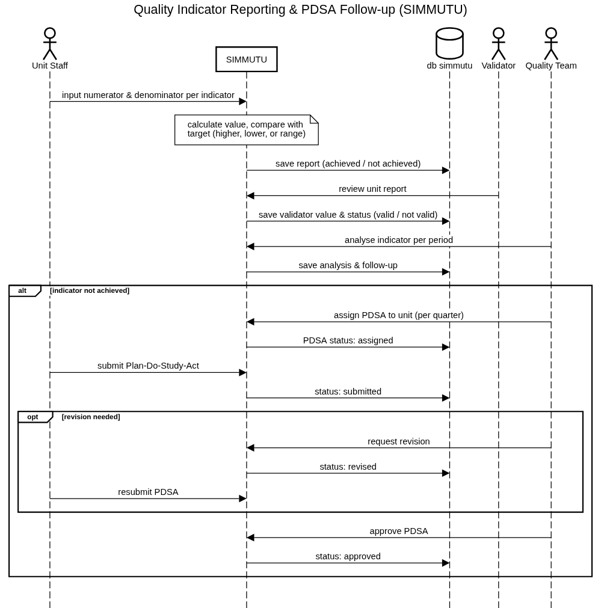
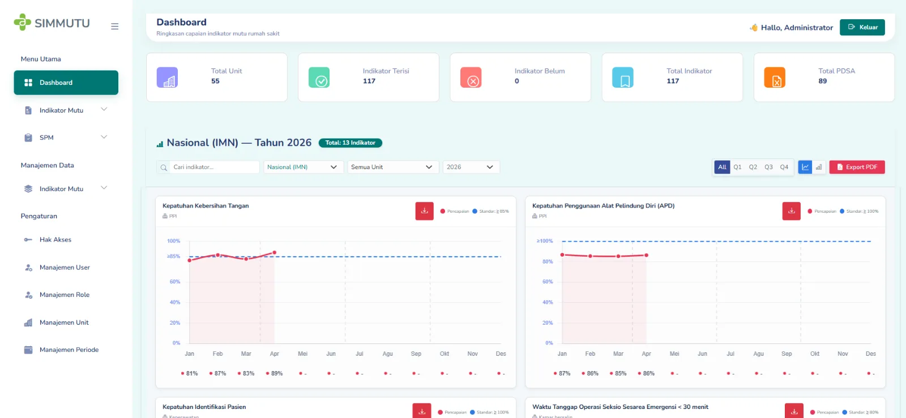
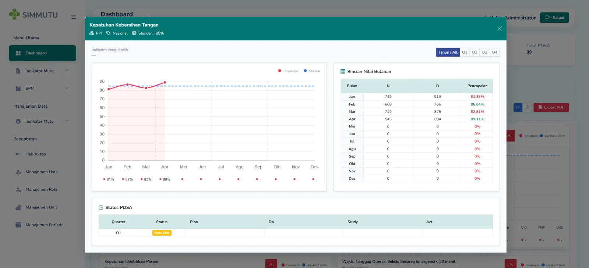
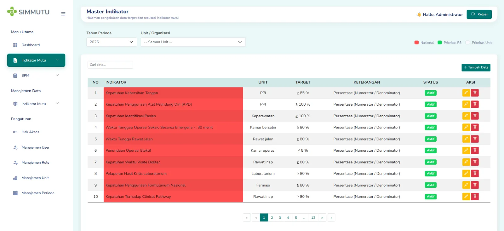
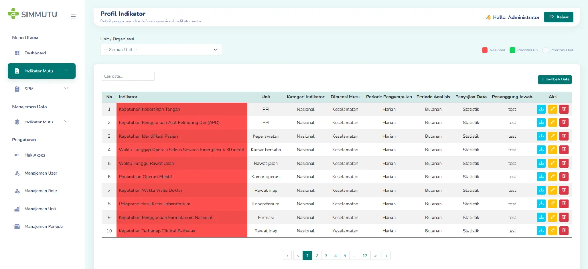
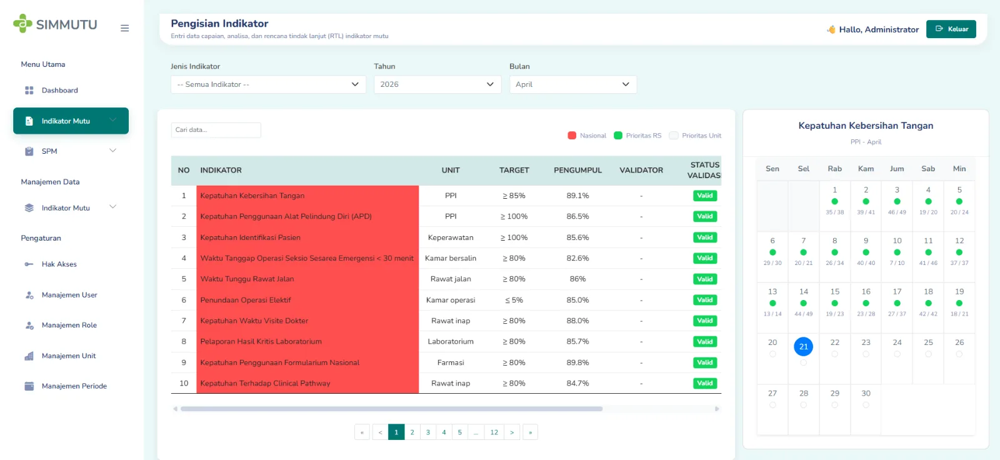
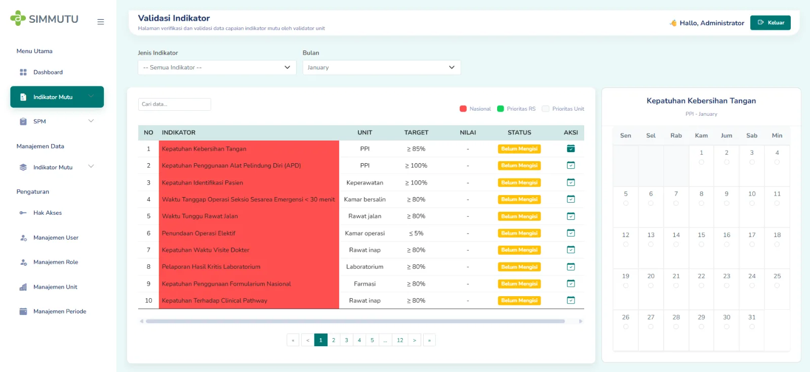
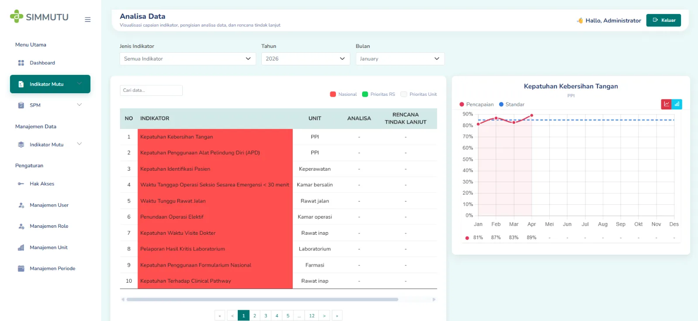
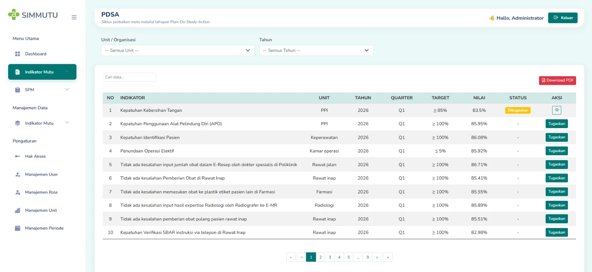

SIMMUTU: Quality Indicator System
A system for hospital units to report quality indicators, have them validated, analysed per period, and followed up with PDSA when a target is not achieved.
01Context & Problem
Every hospital unit measures quality indicators each period, for example compliance or incident rates, and the hospital also reports Minimum Service Standards (SPM). Each indicator has its own target, which can be a minimum, a maximum, or a range.
The process involves several people: unit staff collect the data, a validator checks it, the quality team analyses the results, and indicators that miss their target need a documented improvement cycle. The system had to keep all of these steps, their status, and their history in one place.
02Users & Roles
| Role | Main responsibility |
|---|---|
| Unit staff | Input numerator and denominator for each indicator, submit PDSA when assigned |
| Validator | Re-check unit reports and mark them valid or not valid |
| Quality team | Analyse results per period, assign and approve PDSA |
| Administrator | Manage indicator dictionary, units, periods, users, and access rights per role |
03Key Requirements
- Flexible targets: an indicator can target a higher value, a lower value, or stay within a range; the system decides achieved / not achieved automatically.
- Target snapshot: the target in force when data is entered is stored with the report, so changing a target later does not rewrite history.
- Validation step: validator values are kept separately from unit values, with a valid / not-valid status.
- Follow-up: unachieved indicators are assigned a PDSA (Plan-Do-Study-Act) per quarter with the states assigned → submitted → revised → approved.
- Periods & deadlines: reporting periods can be opened and closed, with deadlines per unit.
- Role-based access: menu access configured per role, not hard-coded.
- Reporting: dashboards, charts per indicator, and PDF export of indicator profiles and PDSA.
04Design
The main flow, from data entry to follow-up:

PDSA status
Data model highlights
indikatorwith target type (higher / lower / range) and min–max, linked to a unit and the indicator dictionarylaporan_dan_analisstores numerator, denominator, value, achievement, and the target snapshotlaporan_validatorstores the validator's own values for the same reportpdsa_assignment(indicator, unit, year, quarter, status) andpdsa(plan, do, study, action)- Separate SPM tables for Minimum Service Standard reporting
05Key Decisions
- Storing the target at the time of input instead of reading the current target, so past achievement stays correct.
- Keeping validator data in its own table rather than overwriting unit data, so both versions can be compared.
- Modelling PDSA as an assignment with a status, so the quality team can see at a glance which units still owe a follow-up.
06Screens








